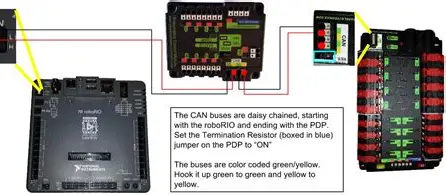
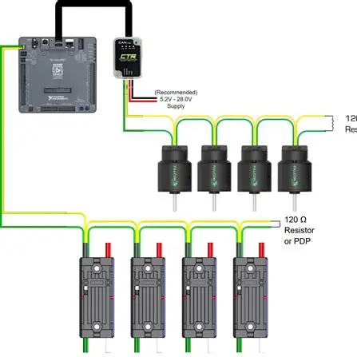
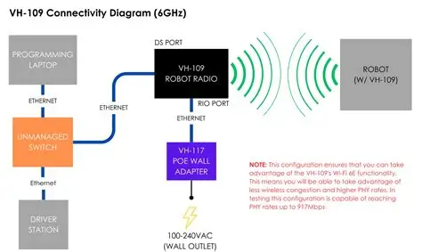

Communication Protocols
Controller Area Network (CAN)
CAN

CAN refers to the Controller Area Network bus, a high-speed, two-wire communication system used in the FIRST Robotics Competition to connect various robot components like motor controllers, sensors, and the roboRIO. It provides reliable, daisy-chained communication with built-in error handling, reducing wiring complexity and enabling features like motor controller chaining and remote sensor data access. The FRC CAN bus operates at 1 Megabit per second and uses a specific addressing scheme for devices to interact efficiently.
CAN FD

CAN FD is the next iteration of the CAN bus data link layer. The FD stand for Flexible Data-Rate, meaning that portions of the frame is transmitted at higher data rates (up to 10Mbps). This means less bus time for more data. Additionally, a single frame can now hold up to 64 data bytes.
This is critical for many reasons:
Lower bus utilizations because of less frame overhead and higher bitrates.
More devices before hitting maximum bus utilization.
Less time spent designing how to split signals across multiple frames
Larger frames mean potential firmware features that were not previously possible with CAN 2.0B.
Performance - So how much better is it?
Calculating the improvement can be tricky since it depends on frame design and which CAN FD bitrate is used. Our research and testing indicate the bus utilization will drop from using CANivore vs the original CAN 2.0 bus by 2X to 8X depending on these details. This improvement will also increase over time as framing changes are made to take greater advantage of the new bus across the product line.
Testing with the 2022 release firmware (CANivore and supported devices) has shown that a typical bus at 80% (as reported by the driver station) will be 35% when used with a CANivore (as reported by Phoenix Tuner). That’s an effective gain of 2.3X. With each season this will continue to be improved with newer device firmware.
Reference the CAN bus utilization page for more insight.
FRC Radio

An FRC radio is a specialized network radio, most recently the VIVID Hosting VH-109 FRC Radio, used in the FIRST Robotics Competition (FRC) to provide robust wireless communication between a team’s robot and the driver station. These devices are ruggedized, offer high-speed Wi-Fi 6E connectivity for reliable performance, and feature multiple Ethernet ports, eliminating the need for separate network switches on the robot.
Key Characteristics
High-Speed Wi-Fi: The current generation of FRC radios supports Wi-Fi 6E for improved speed and reduced interference compared to older models.
Rugged Design: They are built to withstand the demanding conditions of FRC, including unfiltered power input for flexible power options.
Ethernet Ports: Multiple Ethernet ports are built into the radio, simplifying the process of connecting the roboRIO and other onboard electronics.
Configurable for Field and Home Use: The radios can function as an access point for practice at home or a bridge when connected to the FRC field’s network infrastructure.
Software Configuration: The FRC Radio Configuration Utility is used to set up the radio’s network settings, power over Ethernet (PoE) outputs, and other parameters required for competition.
Evolution
Older FRC robots used OpenMesh radios, which had performance issues like poor RF links, slow connection times, and susceptibility to field-wide drops.
The newer VIVID Hosting VH-109 radio serves as a drop-in replacement, offering a significantly more stable and superior wireless experience.
For more information refer to Programming the Radio for detailed instructions on loading the firmware and configuration.
Network Tables
In FRC (FIRST Robotics Competition), NetworkTables is a distributed data structure and communication protocol that allows different robot components (like the robot, driver station, and coprocessors) to share data in real-time. It functions like a shared online dictionary where values are assigned to specific keys, and these key-value pairs are automatically synchronized across all connected devices on the robot’s local network.
How it works:
Key-Value Pairs: Data is stored in “tables” with hierarchical keys, similar to nested folders. For example, goalPosition could be a table with keys goal x coord and goal y coord.
Data Synchronization: When a value is written to a key on one device (e.g., the robot), it’s automatically replicated and can be read by any other connected device (e.g., the driver’s laptop or a Raspberry Pi vision processor) almost instantly.
Data Types: Values can be of different data types, including numbers, strings, booleans, and arrays.
Network Communication: NetworkTables handles the underlying network communication, simplifying the process of sharing data between different hardware and software components.
Common Uses:
Driver Station Dashboards: Data is published to the dashboard (like Shuffleboard) to be viewed by drivers and mentors.
Computer Vision: A vision processor can publish detected targets (like goal position and distance) to NetworkTables, which the robot can then read and use for autonomous control.
Data Logging: NetworkTables can be used to log robot data for analysis and debugging purposes.
Cooperative Control: Different robot mechanisms can share information and coordinate their actions through NetworkTables.
DriverStation
An FRC Driver Station is the software interface that connects human operators to their robot during a FIRST Robotics Competition (FRC) match. It takes input from joysticks, gamepads, and custom devices, allowing the robot’s code to receive commands, and also provides tools for monitoring robot status, selecting autonomous modes, and creating diagnostic log files.
Key Functions
Robot Control: The Driver Station acts as the conduit for control signals from input devices to the robot’s controller (the RoboRIO).
Human Input: It interprets signals from joysticks and other input devices, translating them into commands for the robot.
Diagnostic Tools: The Driver Station provides status indicators for the robot, allows for the selection of autonomous routines, and generates log files for debugging and review after a match.
Communication: It communicates with both the robot and the Field Management System (FMS) to manage the robot’s state during a competition.
How it Works
Input: Human operators use joysticks, gamepads, or custom devices connected to the Driver Station computer.
Software Processing: The FRC Driver Station software, which runs on a Windows computer and is powered by National Instruments (NI) LabVIEW, processes these inputs.
Data Transmission: The software sends the processed data to the robot over the network.
Robot Response: The robot’s code receives these commands and performs the corresponding actions, controlling its motors and mechanisms.
Included Components
FRC Game Tools: The Driver Station is a key component of the FRC Game Tools, a software bundle required for all FRC participants.
Dashboards: The Driver Station can launch various dashboards, such as the LabVIEW Dashboard, SmartDashboard, or Shuffleboard, to provide visual feedback and controls.
Log File Viewer: A separate tool to analyze the diagnostic logs generated by the Driver Station.
I2C
An “FRC I2C” is the Inter-Integrated Circuit (I2C) communication protocol used in the FIRST Robotics Competition, specifically with the NI roboRIO controller. I2C allows a single master controller (like the roboRIO) to communicate with multiple “slave” peripheral devices (such as sensors) using just two data lines: one for serial data (SDA) and one for serial clock (SCL). This enables the robot’s software to read data from sensors, control actuators, and manage other integrated components efficiently over a single bus.
How it Works:
Master/Slave: In an FRC context, the roboRIO acts as the master controller, sending instructions and clock signals to the slave devices.
Two Wires: Communication occurs on two main lines:
SCL (Serial Clock): The master provides the clock signal to synchronize data transfer.
SDA (Serial Data): This line transmits the actual data between devices.
Unique Addresses: Each I2C device on the bus has a unique address. The roboRIO uses these addresses to select a specific device for communication.
Daisy-Chaining: Multiple I2C devices can be connected in a “daisy-chain” on the same bus, sharing the SDA and SCL lines, which simplifies wiring for complex systems.
Typical Use: FRC teams use I2C to connect various sensors, including color sensors, gyroscopes, and other specialized peripherals, to the roboRIO’s I2C port or MXP port.
Why it’s Used in FRC
Simplicity: I2C requires fewer wires than some other communication protocols, leading to less complex wiring on the robot.
Versatility: It allows for communication with a large number of different peripheral devices, all managed by a single controller.
Standardization: I2C is a well-established protocol used by many FRC-compatible hardware manufacturers, ensuring interoperability.
References
FRC Documentation - Network Tables
FRC Documentation - Outline Viewer
FRC Documentation - Programming the Radio
FRC Documentation - RoboRIO Network Troubleshooting
FRC Documetation - DriverStation
What is CAN FD - CAN FD CTRE Electronics